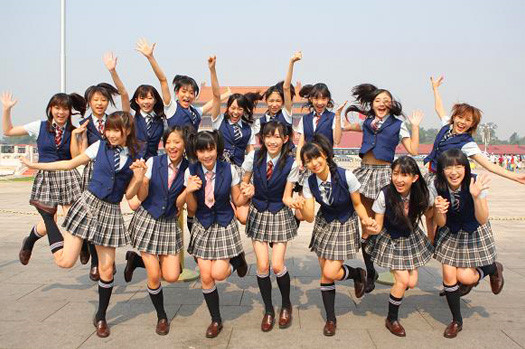

このサイトについて
このホームページをご覧いただきありがとうございます。
このサイトは、私の博士課程の申請のために作りました。それから教授の閲覧することは便利になるのかもしれません。
博士後期の課程に申請する動機
私は大学の教師になるという理想がずっと持っています。自分の専攻分野で未知を探求し、新しい方法を生み出すことに興味があります。研究活動に参加したいと思います。
将来的には、学生、特に後進の学生の学習能力や研究能力を向上させる手助けたいです。私は彼らと同じような経験がたくさんあるので、彼らをもっと助けられると思います。
一方、安定した仕事の方が自分の性格に合うと思います。
学生時代には、博士課程に入学するチャンスもありましたが、逃してしまいました。長年、会社勤めていても、その夢は消えません。最終、海外の博士に申請することを決意しました。
博士を卒業した後は、中国に戻って、専門学校や普通の大学や教育機関などの教師になるつもりです。
私について

初めまして、私は張良です。
私は中国の東部の山東省の省都、済南市で住んでいます。この近くのさな町で育ちました。
私は山東省の一般的な大学で機械工学の学士を取得しました。その後、全国の大学院の入試を受けました。大学院では、私の研究室は主にNC機械やロボットの信頼性を研究しています。私の研究内容は、機械の構造解析と計算方法でした。そのCAEとソフトウェアの仕事を行いました。
修士を取得した後、上海で数年間、ソフトウェアのエンジニアとして働いていました。現在は、済南のソフトウェア会社で働いています。
余暇には、サッカーをしたり、日本の漫画を見たり、いくつかの音楽グループのが好きです。
よろしくお願いします。

